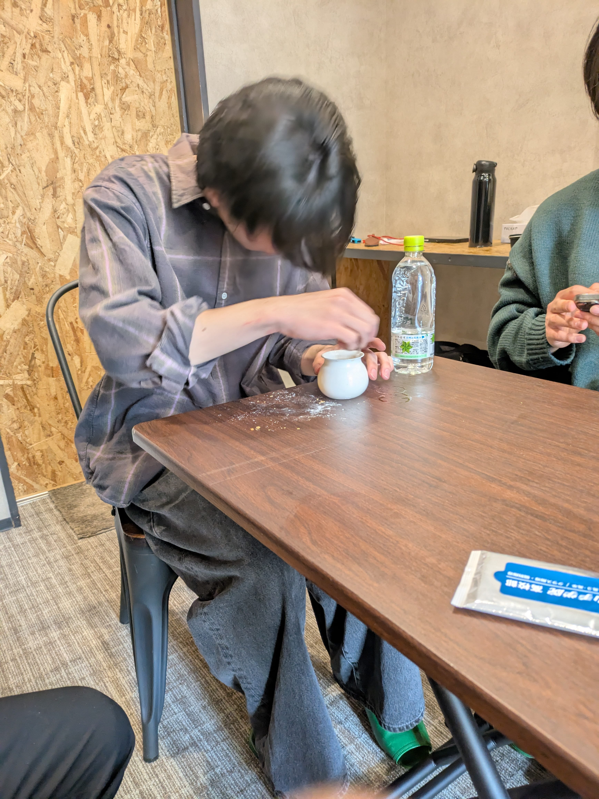
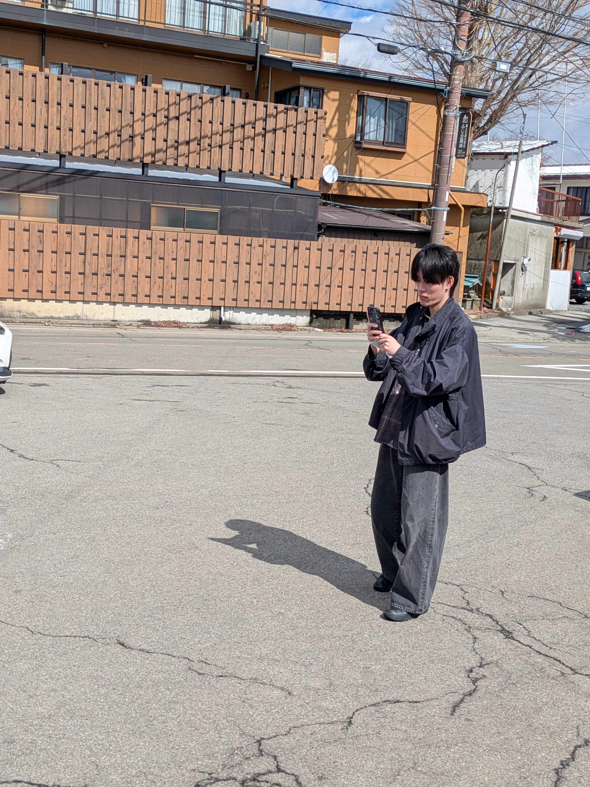
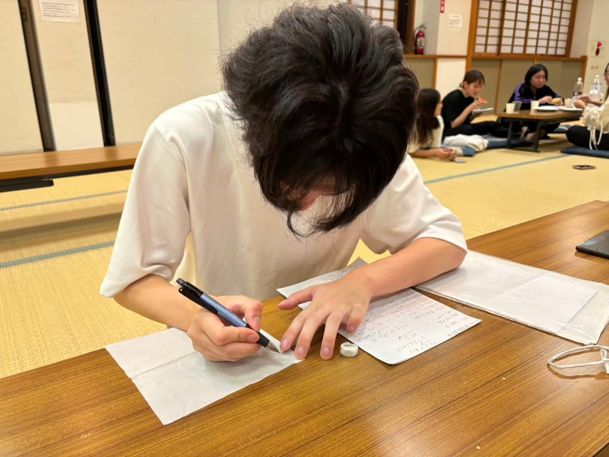
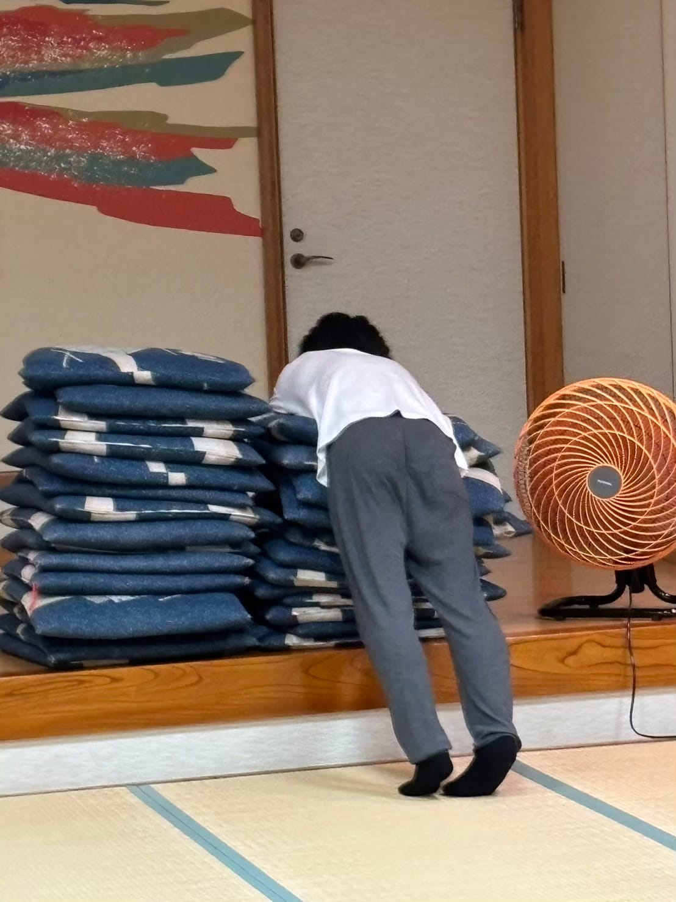
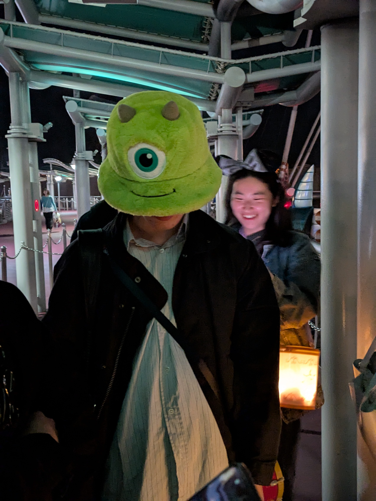
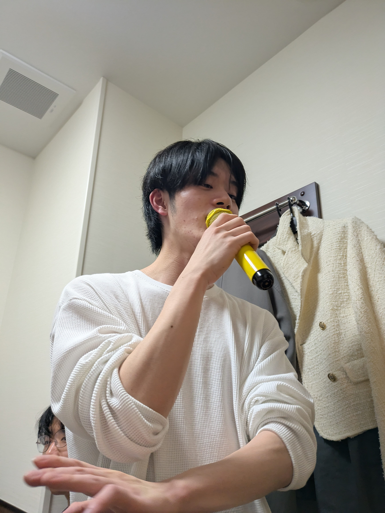
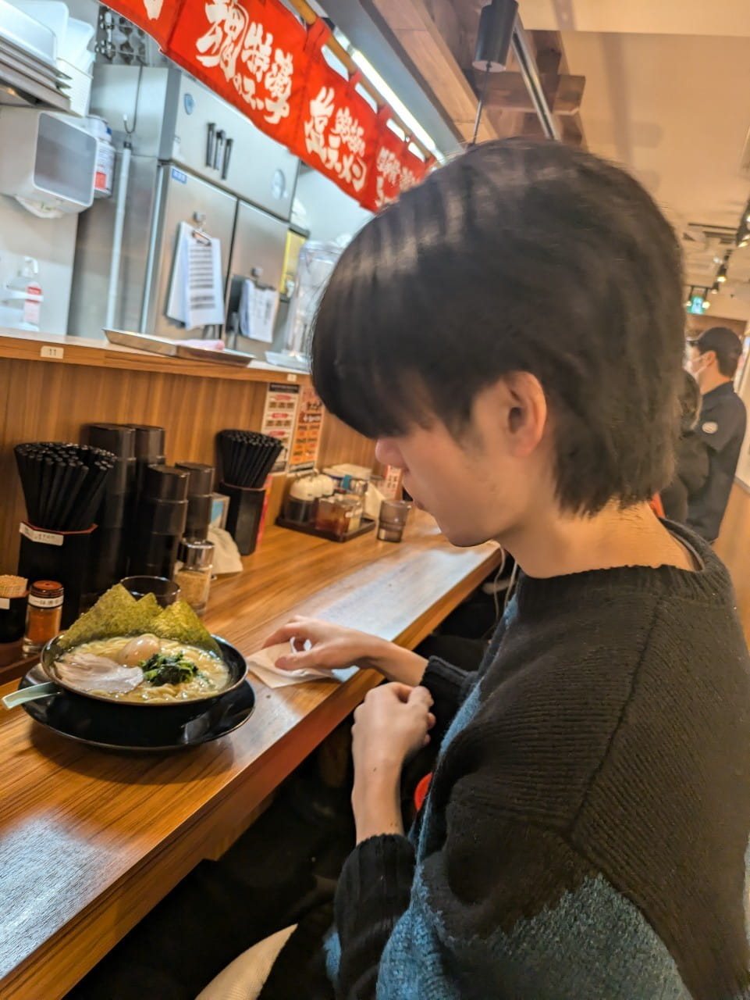

御茶ノ水、月曜五限終わり。
冬になり日没が早くなった御茶ノ水、駿河台キャンパス。部室棟14号館の和室に、秋の虫の音に似せた箏の音色が響き渡る――。
そこには、伊藤 光琉、そして今回密着する田島 知季の姿があった。
一見すると物静かで、どこか影のある佇まい。周囲や次期練実からは「ネガティブ」と評されることも少なくない。
だが、その静けさの奥には、誰よりも熱い向上心と、常人には理解しがたい “ 狂気 ” が潜んでいた。
――最近は、どんなことを考えながら箏を弾いていますか？
田島：いや……正直、まだまだだなって思うことが多いです。
今回定演で弾く『虫の武蔵野』、ずっと弾けない箇所があって。今回一緒に弾くことになった勇は、ずっと古典・宮城を弾き続けているので、追いつけるように練習してます。
大合奏曲の『SAKURA』も、去年あれだけ先輩方が教えてくれたのに、河合さんにあんまり教えきれてなくて。4年の先輩方はほんと上手いですし、リハの箏四重奏を聴いて、負けないように頑張らなきゃなって。
――一緒に練習していて、田島さんはどんな存在ですか？
伊藤：いやぁ〜、彼、本当にストイックだヨネ😊普段は「俺なんて…」ってネガティブ全開ダケド、納得いくまで何回も弾き直しててサ✨
ボク、感動しちゃったヨ〜💦この部で一番熱量あるカナ❓いや〜凄いネ👍ボクも負けないようにガンバらなきゃっ😎✨
控えめな言葉とは裏腹に、彼の練習は妥協を知らない。
そして、自分の理想に届かないとき、彼は誰よりも深く落ち込む。
2年定期演奏会前、『茶音頭』の練習中だった。
突然、佐々木と二人きりの部室で箏の音がピタリと止まる。
『茶音頭』練習中、急に音が止まり俯く田島
音のない空間で、ただ一人、俯き続ける田島。
これは、常識人という仮面の奥に、純粋すぎる情熱と狂気を抱えた男・田島知季の、密着の記録である。
（♪『Progress』 feat. kodai.gt が静かに流れ始める）
――田島さんについて教えてください。
菅原：なんていうか、その、最初は結構落ち着いてて真面目な感じなのかなって思ってたんですけど……。箏の練習で沼り始めると、急にスイッチが入るっていうか、急に笑い出したりして、見てるこっちが「どわー笑 ちょw1回落ち着けw」ってなるんですよね。そこらへん、ちょっと狂人っぽいなって思います。
そう、田島の真骨頂は「追い込まれた瞬間」に現れる。
1年生の部内演奏会・お弾き初め。披露するのは『アンパンマンマーチ』。
指が追いつかない。思うように弾けない。その限界を超えたとき――。
お弾き初め『アンパンマンマーチ』で限界を迎え急に笑い出す田島（横：松田みうぜ）
――この動画見て、どう思います？
内海：うおw😅 いや、田島くんってこういう人なんだって、ちょっと驚いたかもw
真面目そうな顔して、一番やばいスイッチ持ってるなって思いましたw
え？冗談ですやん！！ちょw 田島くん怒んないでよw
ネガティブと狂気は、常に紙一重だ。
だが、そんな彼にも、すべてを忘れて無心になれる瞬間がある。
田島は、大の甘党である。
カフェを巡ってはケーキを食べあさり、合宿先でも甘いものへの執着を隠さない。

1年春合宿、プリンにまぶされた白い粉で机を汚す決定的瞬間
普段「常識人」を気取る彼も、プリンを前にすれば無防備になる。机に散らばった白い粉は、彼が一瞬だけ重圧から解放された証でもあった。
――田島さんの甘党ぶりについて教えてください。
石井：田島くんのスイーツに対する集中力は、本当に、あの、ケーキとかプリンとか見ると、すごく、目が、甘いものを食べる時に、さっきまで静かだったのに、急に、あの、すごく、狂気を感じます！！
しかし、密着を続けるうちに、私たちはさらに不可解な光景を目撃することになる。
合宿所の自室。そこには、奇声を上げる謎の楽器を手にした田島の姿があった。
1年春合宿、自室でオタマトーンを過激に演奏する様子
それだけではない。
鳩をじっと見つめ、夏合宿では突如として数学の問題を解き始め、かと思えば酒も飲んでいないのに積み上がった座布団へとダイブする。

1年春合宿、鳩にレンズを向ける田島

1年夏合宿、突如として数学と向き合う姿

1年夏合宿、シラフのまま積み上がった座布団へダイブ
――なぜ彼は、こうした行動をとるのでしょうか？
髙山：臨床心理を専攻している身として、行動心理学的に見ると、普段「自分は常識人だ」というセルフイメージを強く持っている人ほど、溜まったストレスやプレッシャーを言葉にしづらい傾向があります。その反動で、シラフでの座布団ダイブやオタマトーンの激しい演奏みたいな、非日常的な行動によって一気に精神のバランスを取ろうとしているんじゃないかと思います。
不器用で、言葉数は少ない。
だが、一度心を開いた仲間の前では、驚くほど人間味あふれる表情を見せる。

1年ディズニー、マイク・ワゾウスキーと完全一体化

カラオケ中、カメラを向けられて照れる田島

仲間とラーメンを囲むひととき
自分から前に出ることはない。もちろん弱音を吐くこともある。
それでも彼は、今日も箏の前に座り、絃を震わせる。
――田島さんにとって、プロフェッショナルとは？
田島：……プロフェッショナルですか？ いや、自分なんかにはまだ全然わからないですけど……。
でも、どれだけ心が折れても、最後にまた箏の前に戻って、弾き続けるってこと、ですかね。
（♪『Progress』feat. kodai.gt のサビが響き渡る）
常識人という殻を破り、狂気すらも音に変える男・田島知季。
彼の紡ぎ出す一音一音は、私たちに
そんな努力の大切さを語ってくれるのだ。
super thanks https://www.youtube.com/@KumaGuitar-x5d